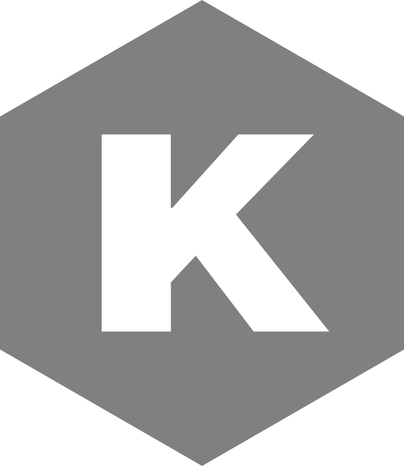

Zero interest loans
Borrow KUSD against KOIN, ETH or BTC
Launch App
Total Value Locked: $
Meet KUSD
KUSD is a decentralized, overly-collateralized stablecoin pegged to the US dollar. Built on the feeless Koinos blockchain, it is the most frictionless stablecoin in the cryptoverse.
Deposit Koinos, Ether or Bitcoin as collateral and start to experience DeFi with zero transaction fees.

Frictionless
No high interest rates, no transaction fees.
Instead KUSD charges a small, one-time fee of 0,3% upon deposit
Maximal flexibility
Manage your position with zero transaction fees.
Set a collateral ratio of up to 110%
Decentralized
Immutable, non-custodial, and governance-free.
Have full control over your assets at all times.
About KUSD
What is the KUSD protocol?
Koinos USD (KUSD) is the first native stablecoin of the Koinos Blockchain.
It is a decentralized borrowing protocol that allows you to create 0% interest loans using Koinos, Ether or Bitcoin as collateral.
A minimum collateral ratio of 110% is required.
Is KUSD free?
Instead of charging unpredictable interest rates, a one-time fee of 0.3% is deducted when you deposit collateral.
Afterwards you can manage your position without worrying about fees.
Freely mint KUSD (within the 110% collateral ratio limits) and repay your loan as you see fit.
The Koinos blockchain is feeless, which means you pay zero transaction fees.
How does KUSD maintain its peg?
KUSD uses market incentives to maintain its $1 peg.
If the price of KUSD falls below $1 borrowers can cheaply repay their loans, buying up KUSD and bringing the price back to the peg.
If KUSD is worth more than $1 everyone can mint extra KUSD and sell it at a profit, pushing down the price.
If a borrower's position falls below the 110% collateral threshold anyone can trigger a liquidation and receive the borrower's collateral and debt, effectively making a 10% profit.
What is the difference between KUSD Gold and KUSD Silver?
KUSD can be minted using 3 types of tokens as collateral: Koinos, Ether and Bitcoin.
These last two tokens are wrapped which means there is a slight, although very unlikely, possibility of a hack.
To further strengthen the robustness of KUSD we segregate collateral and offer users the choice between KUSD backed by Koinos - KUSD Gold (KUSDG) - and KUSD backed by Ether and Bitcoin - KUSD Silver (KUSDS).
Both stablecoins are worth $1 and work according to the same mechanisms.